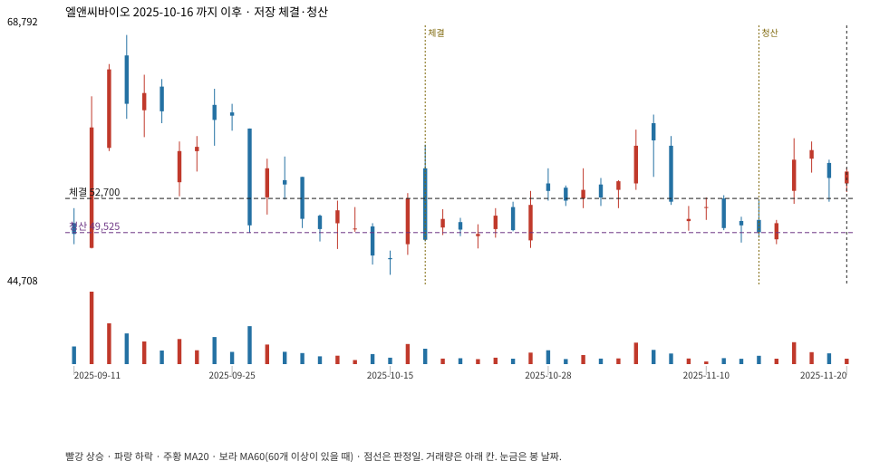

계좌를 다시 돌리지 않았다. 아래는 저장된 주문·체결·청산·비용·손익이다.

{
"case_id": "3266da67b72d5414",
"status": "closed",
"trade": {
"symbol": "290650.KQ",
"signal_date": "2025-10-16",
"quantity": 125,
"entry": 52700,
"stop": 44650,
"target": 67900,
"planned_risk": 1021206.5843749997,
"reserved_cash": 6594087.499999999,
"fill": {
"date": "2025-10-17",
"price": 52700,
"fee": 6587.5
},
"exit": {
"date": "2025-11-13",
"price": 49525.225,
"reason": "time",
"net_pnl": -409625.02812499925,
"ambiguous_bar": false
}
},
"cost": "research fee 10bp each side, slippage 5bp; amounts below are the stored ledger, not a new run",
"chart": "c\/3266da67b72d5414.svg"
}